Территория 50 соток
Приватный отдых без посторонних
Закрытая благоустроенная территория на 50 сотках земли. Всего два изолированных дома, у каждого отдельная мангальная зона и собственная терраса с видом на природу.
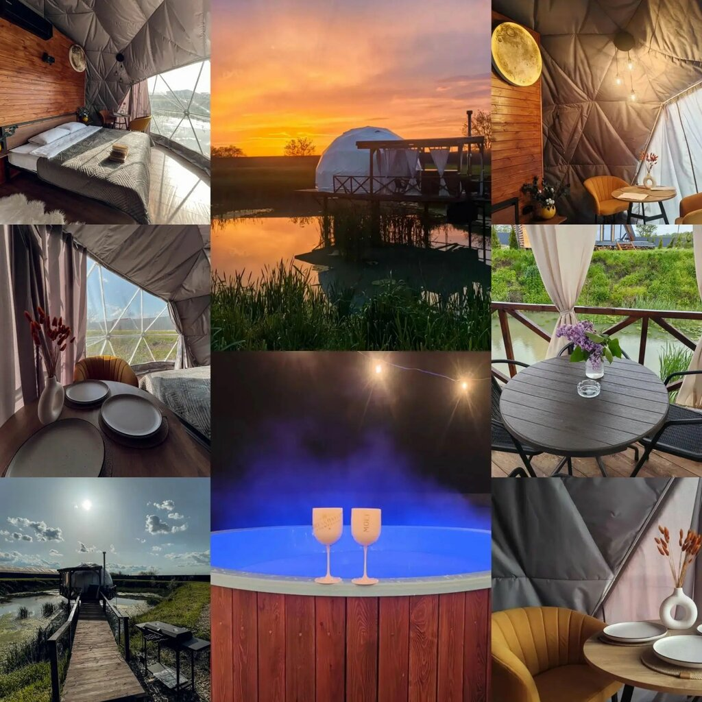
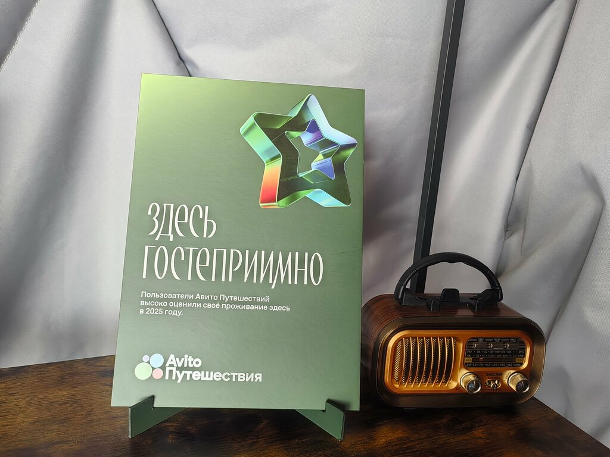
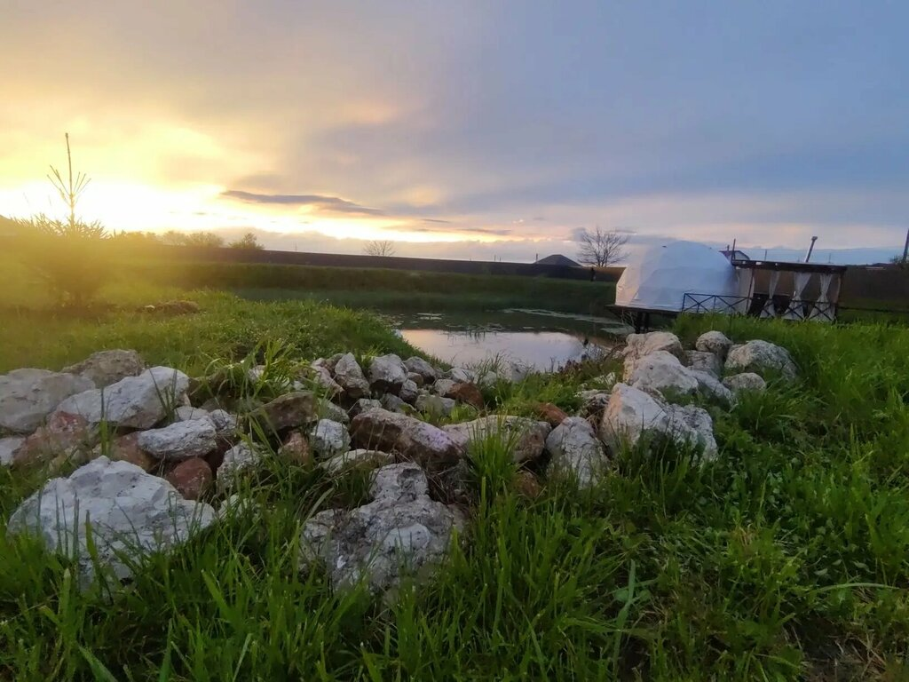
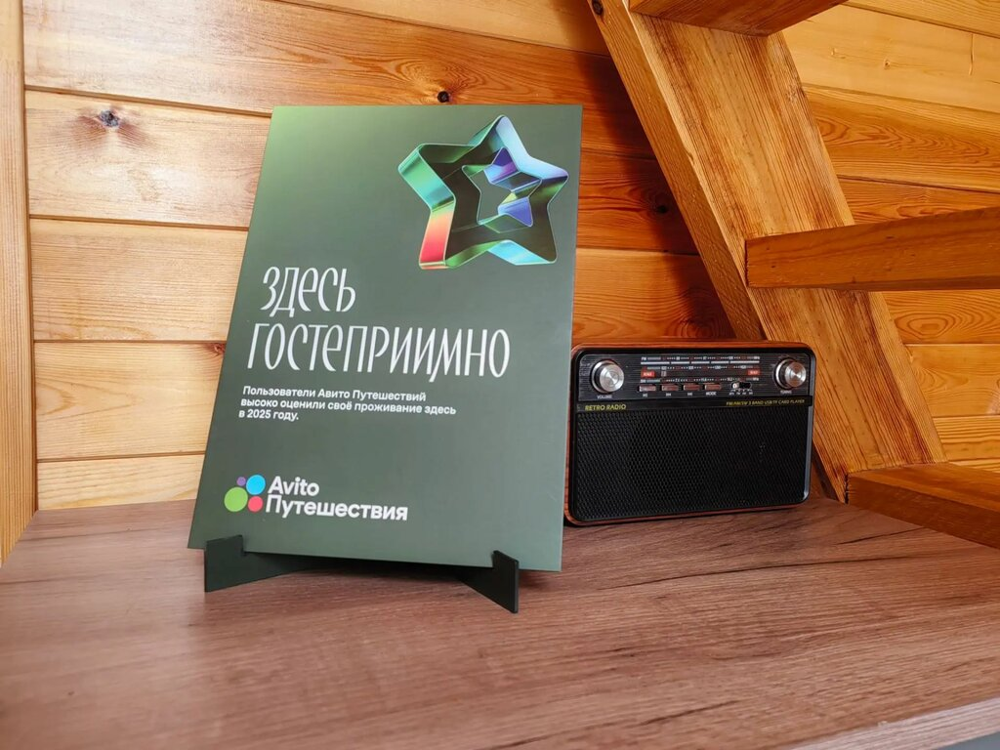
Закрытая благоустроенная территория 50 соток у озера: дизайнерский дом-шалаш A-frame, панорамная купольная сфера и горячий банный чан на дровах на базе отдыха «FERMERSKII DVORIK».
Уютное и тихое место в посёлке Южный под Белореченском. Закрытая огороженная территория 50 соток для спокойного семейного отдыха вдали от городского шума.
Закрытая благоустроенная территория на 50 сотках земли. Всего два изолированных дома, у каждого отдельная мангальная зона и собственная терраса с видом на природу.
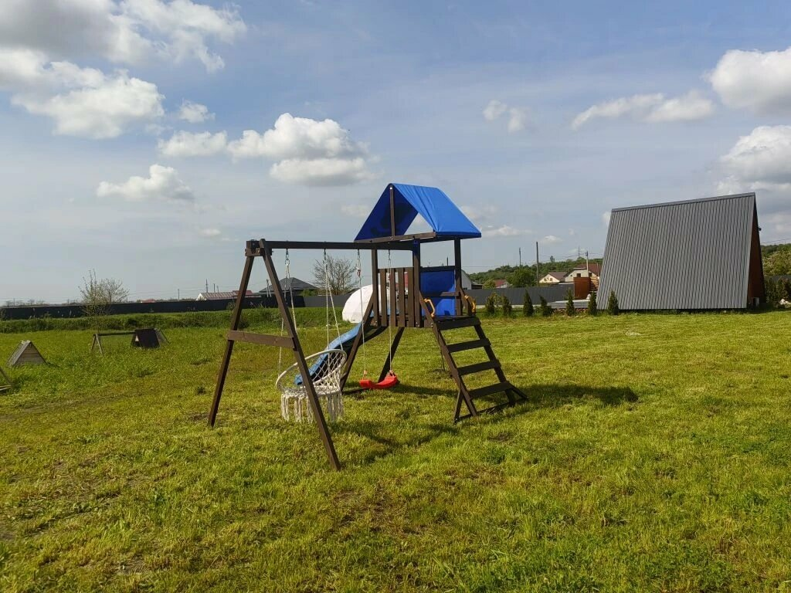
Тихий загородный уголок среди зелени и свежего воздуха. Никаких шумных компаний — идеальные условия для спокойного отдыха с семьей или романтических выходных.
Сибирский банный чан на дровах под открытым небом, просторная беседка со столом и мангал с шампурами и решеткой для барбекю.
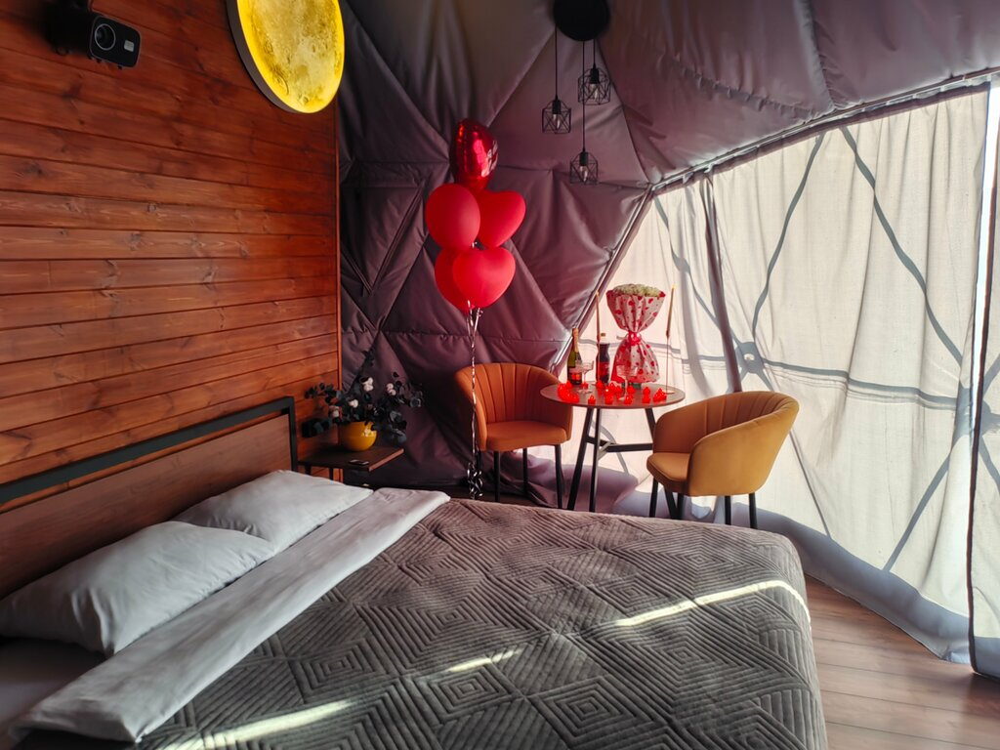
В каждом доме собственный санузел с горячей водой и душем, сплит-система тепло/холод, мини-кухня с индукционной плитой, холодильником, микроволновкой, чайником и посудой. Предоставляются полотенца и свежее постельное белье.
Дома расположены обособленно друг от друга. Вы можете выбрать классический треугольный дом-шалаш A-frame или панорамную купольную сферу.
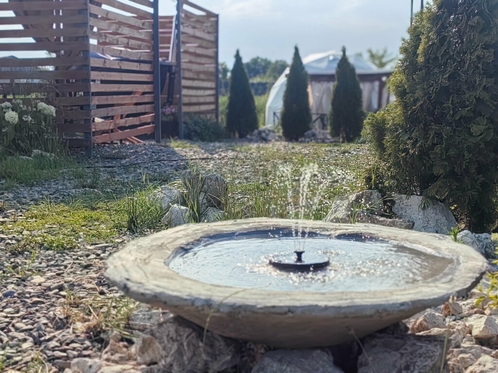

Каркасный деревянный дом в стиле A-frame с панорамным фасадом в пол. Ортопедическое спальное место на втором ярусе под крышей, раскладной двуспальный диван на первом этаже, кухонная зона, душ и собственная терраса с видом на природу.
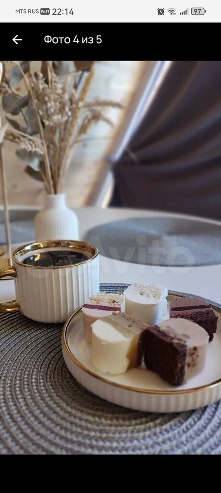
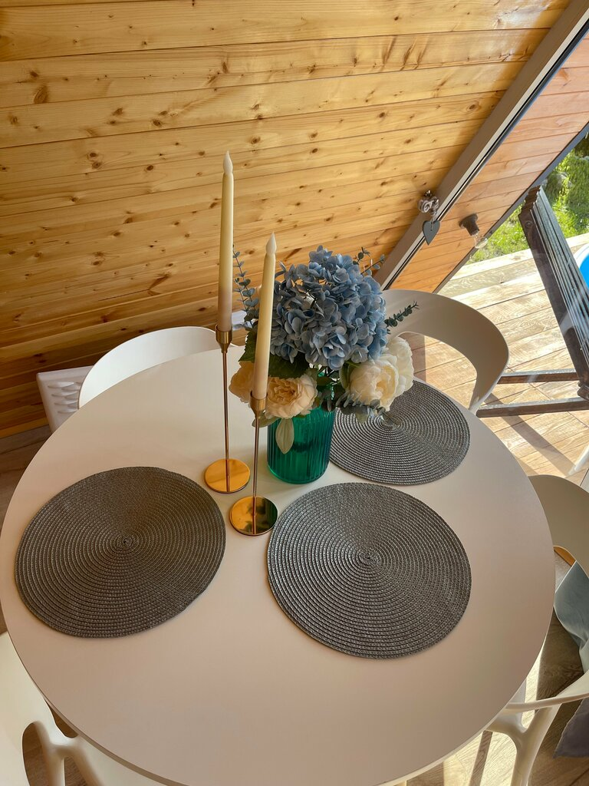
Просторный геодезический купол с панорамным фронтальным остеклением и видом на воду. Широкая двуспальная кровать с видом на закат, мягкая зона отдыха, полноценная кухня, санузел с душевой кабиной и терраса у чана.
Актуальные свободные даты базы отдыха «FERMERSKII DVORIK». Вы можете выбрать даты в модуле или перейти в наш проверенный профиль на Авито.
Реальные фотографии домов, интерьеров и банного чана базы отдыха «FERMERSKII DVORIK».
Условия и правила проживания из наших объявлений на Авито для комфортного отдыха каждого гостя.
Заезд: с 14:00 | Выезд: до 12:00.
Ранний заезд или поздний выезд возможны при наличии свободного времени между бронированиями и согласуются заранее.
При заселении вносится возвратный страховой залог за сохранность имущества.
Залог возвращается в полном объеме в день выезда после завершения уборки дома и проверки порядка.
Режим тишины действует с 22:00 до 08:00.
Формат базы отдыха — спокойный загородный отдых в кругу семьи и близких. Шумные вечеринки с мощными колонками на открытом воздухе строго запрещены.
Размещение со своими домашними животными возможно исключительно по предварительному согласованию с администратором при бронировании.
Курение любых видов сигарет, кальянов, вейпов и электронных испарителей внутри домиков категорически запрещено.
Курить разрешается только на открытом воздухе в специально оборудованной мангальной зоне с использованием пепельниц.
Бронь закрепляется за вами после внесения предоплаты через модуль бронирования или профиль на Авито.
Условия бесплатной отмены или переноса дат зависят от тарифа и согласовываются в индивидуальном порядке.
Честные отзывы гостей из нашего профиля на Авито и Яндекс Карт.
«Нам очень понравилось !!!🥳🥳🥳 Это лучшее место, что бы уединиться с любимыми ❤️ Очень романтичное и необычное место, Джакузи грел нас сутки 💦 Предусмотрено все, для спонтанного отдыха , халаты , тапочки , полотенца , на кухни есть все и даже больше 🔥 А когда утром пошел дождь, впечатлением было невероятное , что ты в палатке, при чем максимального уровня комфорта и звук дождя как в лучших медитациях это не передаваемо 🥹🥹🥹 Очень внимательные , добрые, приятные , заботливые хозяева !!! Спасибо вам за наш прекрасный отдых! Успехов вам 🌸❤️»
«Уютное место. Всем рекомендую.»
«Очень понравился отдых здесь! Тихо, спокойно и приятно находится на территории. Порадовала чудесная теплая купель у домика, своя терраса. В самом куполе уютно и тепло, есть все необходимое для комфортного отдыха. Хозяева очень приветливые и гостеприимные, приедем ещё обязательно!»
«Это был идеальный мини-отпуск! Домик — уютный уголок, где сразу чувствуешь себя как дома. Чан — вообще отдельная история: столько уюта и тепла, что не хочется вылезать. Ферма добавила впечатлений — особенно понравилось просто гулять и наблюдать за животными. А хозяин — настоящий профессионал гостеприимства: всё чётко, по делу и с заботой. Спасибо за эти выходные, они запомнились!»
«Спасибо большое Юрию и его жене, за то что создали такое комфортное место для отдыха недалеко от Краснодара. Видно что хозяева подходят к делу с душой и отдают много своего времени для этого места. В это место хочется возвращаться, потому что все сделано с любовью. Вернёмся в это место ещё не один раз.»
«Очень уютное и приятное место для отдыха. Домик чистый, хозяева вежливые, всегда подскажут и ответят на любой вопрос. В домике есть всё необходимое для комфорта. Рекомендуем»
«Нам очень понравился этот вариант для отдыха. Интерьер стильный, обстановка уютная, при этом всё функционально и удобно — ничего лишнего, но есть всё, что нужно. Территория и оформление радуют глаз: красиво и со вкусом. Отдельно хочется отметить хозяев: они настоящие профессионалы своего дела — внимательные, тактичные, создают по-настоящему гостеприимную атмосферу. Спасибо за отличный отдых, будем рекомендовать друзьям!»
«Прекрасное место,очень уютно,тихо. Животные,пруд,лотосы -это все радует взгляд 😍 Отдельное спасибо за восхитительный подогреваемый джакузи. Приятные хозяева,всегда помогут и подскажут.»
«Советую всем уютное место все удобство ,вежливые хозяева все рассказали показали очень понравилось 😊»
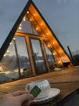
«Бронировали домик,уютный, со всем необходимым внутри. Прудик, животные. Домик чистый, в бассейне вода тоже. Ребенок был в восторге. Спасибо, за такое красивое место.»
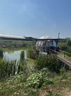
«Сказочный отдых! Отдыхали здесь семьей с годовалым малышом. Это было просто волшебно! Для нас было критично важно наличие комфорта с ребенком, и хозяева все продумали идеально. Сам геокупол очень уютный, с кондиционером и абсолютно безопасный для малыша: никаких острых углов, чистота идеальная. Есть удобная зона готовки. Отдельная любовь - купель-джакузи с подсветкой. Джакузи работает мягко, без сильного напора, что безопасно даже для маленьких гостей. Спасибо хозяевам за такой продуманный уголок спокойствия! Обязательно вернемся еще.»
«Отдыхали 2 дня, очень все понравилось, дети не хотели уезжать, спасибо большое за отдых»
«Хорошее место для отдыха от городской суеты. Всё чисто, аккуратно. Хозяева приветливые и очень внимательные. Рекомендую.»
«Всё очень понравилось! Спасибо! Всем рекомендуем!»
«Прекрасный домик все чисто уютно Отдых был замечательным.»
«Домик чистенький, уютный, видно, что все сделано с любовью, каждая мелочь! С удовольствием поиграли в футбол, теннис и бадминтон — это всё есть на территории. Также есть шахматы и карты, но до них даже руки не дошли 😃 Хозяева приветливые и щедрые! Помимо того, что в домике есть зубные щетки и чай с кофе ( а это не везде так), оставили ещё коробочку конфет и апельсины для чана, который мы могли подтапливать хоть всю ночь🔥 Нам очень понравилось всей семьёй! Спасибо вам!»
База отдыха находится в тихом посёлке Южный Белореченского района: 10–15 минут от центра Белореченска и около 1,5 часов спокойной дороги из Краснодара.
поселок Южный, улица Полевая, дом 91А
GPS координаты: 44.724078, 39.863818По автодороге А-160 через Усть-Лабинск в сторону Белореченска. Перед въездом в город повернуть на поселок Южный по навигатору. До самых ворот ведет удобный асфальтированный подъезд.
По автодороге Майкоп — Белореченск со съездом в поселок Южный.